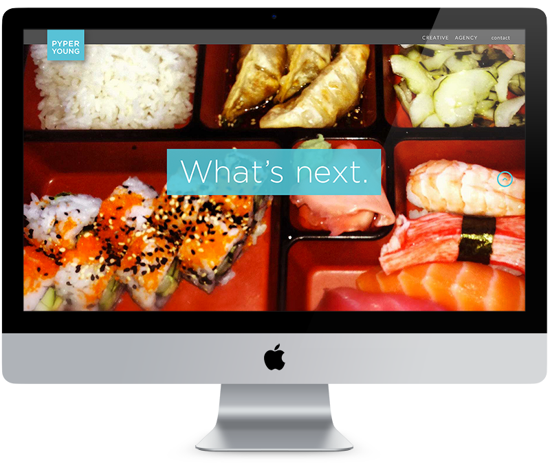
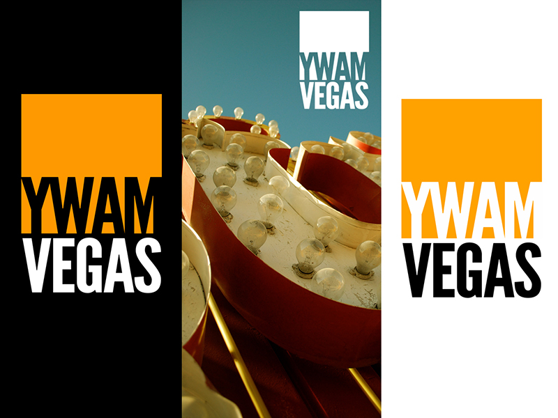
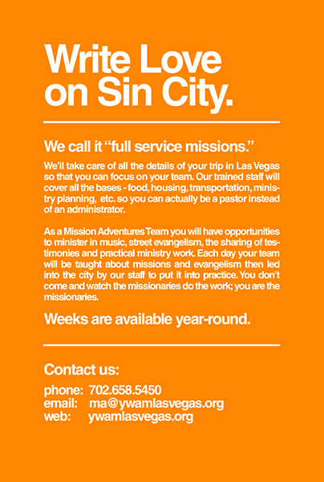
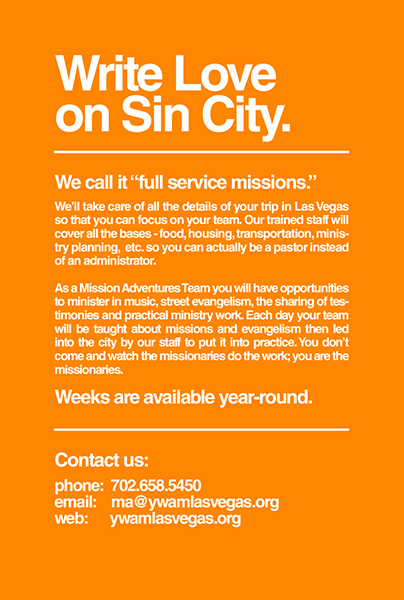

Josh
Warner
Designer of Print
and Digital Media
St. Petersburg, FL
Pyper Young
Currently I'm part of the creative team at Pyper Young, which just brought home multiple Addys from the Tampa Bay Addy Awards. While here I've been able to hone my skills in UI/UX design front-end development while completely remaking the agency's website and designing sites for several clients.
Bridgepoint Church
Upon moving to St. Petersburg I joined the Communications team of the fastest-growing church in the city. Bridgepoint is dedicated to communicating a relevant message in modern language, and a comprehensive visual communication strategy plays a big role in reaching out to people. To that end I designed many different graphics for sermon series, digital billboards, and signage. The church also has a large, high-traffic website, a mobile app, and a weekly email newsletter, all of which I helped manage and maintain it and adding new pages, graphics, and links as needed.
Youth With A Mission
In Las Vegas I had the privilege of working with many committed, selfless volunteers as we served the city of Las Vegas. My role grew to encompass almost all of the organization's communications needs, which included creating a brand identity that incorporated the organization's values and beliefs into a relatable visual identity. YWAM Vegas still uses this brand today. Shown are a few of the pieces developed for promotion of the organization's training and outreach programs.
As part of our communications strategy, I was able to build the organization a brand new website to replace the one they'd had since the late 90's: ywamlasvegas.org. The website has changed since, but many of the visuals I created remain.
 
I'm passionate about telling meaningful stories in beautiful ways.
Born and raised in sunny California, lived in San Francisco, Las Vegas, and LA, now living in the even-more-sunny St. Petersburg, Florida. Currently I'm a member of the creative team at Pyper Young, a full-service ad agency, and I freelance when I have the time. Life has given me experience with everything from high-level conceptual strategy to hands-on pixel work. At this stage I've gotten to play with the Adobe Creative Suite over 15 years.
The last few years have been a crash course in modern, mobile-first, responsive front-end web design, and it's this field that I'm most excited about. I am excited about the possibility for storytelling using all the tools of the Internet age. Currently I am very familiar with HTML5, CSS3, and decisions that go into using those tools to create great experiences for users. Every day I go deeper into jQuery and Javascript. Maybe someday I can learn Ruby and build web apps that change the world.
Let's create something beautiful together.
I'm always looking for more ways to tell stories through design, so if you have any kind of project you think I could help with don't hesitate to send an email or contact me through any of the millions of social media accounts we all have (email works best though).